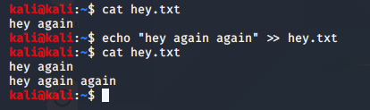

to append to a file

to create a new file
type in something
nano is like a text editor in terminal other options are vi,vim
open file in text editor like notwpad :
gedit newfile.txt
Also u could open a new file using nano newfile.txt